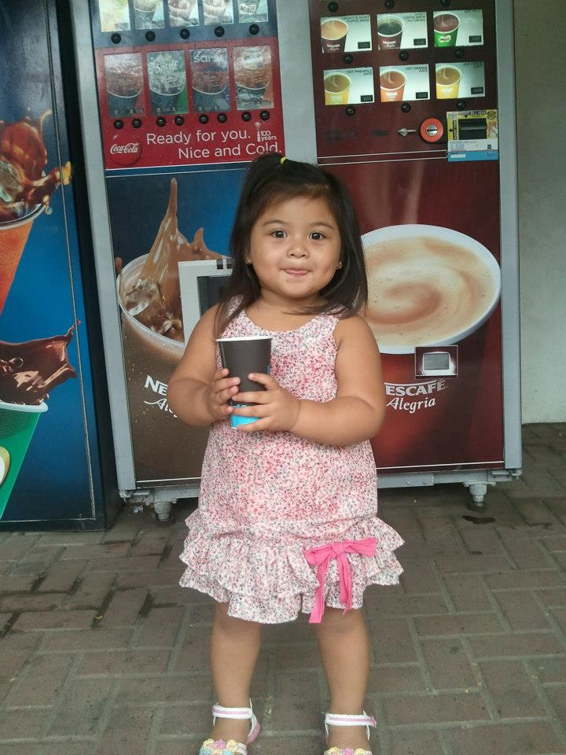
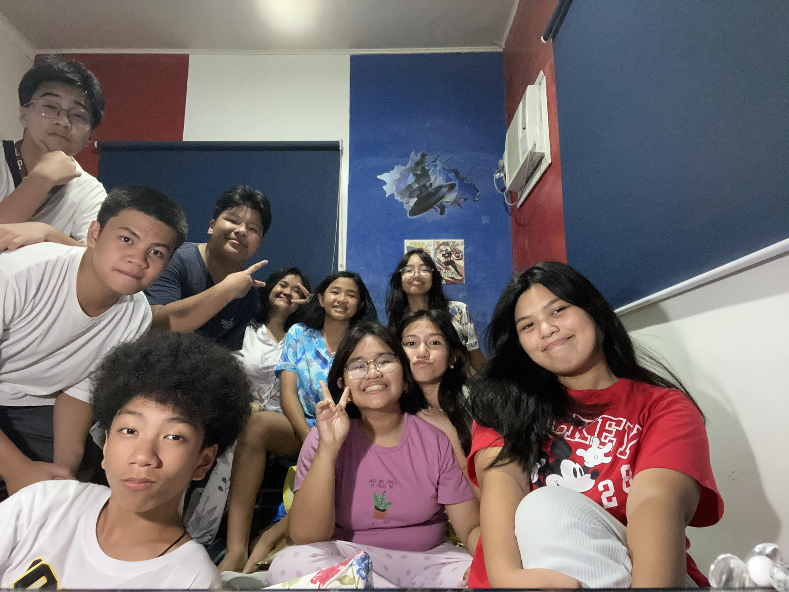

Hello! My name is Elisha Jade D. Domondon , 14 years old, from 9-Family. I enjoy reading, cooking, and listening to music. I am currently studying in Las Pinas City National Science High School. I have 1 sister, 5 pet dogs, and 1 cat.
| Baby Picture | Recent Picture |
|---|---|
|  |

| Lists | Tables | Forms |
 |
 |

|
 |
 |
 |
The first quarter of this school year is considered very memorable to me. Not just because of amount of activities, groupworks, and deadline we had to face, but also the connections and friendships we made along the way. I would first like to thank God for granting me the ability to overcome all the challenges and hardships that I have faced during these times. I would also like to thank Ms. Uminga and my friends for helping and guiding me throughout my journey for this quarter. I am very grateful for each and everyone of them for not giving up on me. Instead, they all tried their best to uplift and encouraged me whenever I felt like I couldn't do it.
With all these lessons that we have encountered, my favorite lesson would probably be Lessons 2-3 (Tables). I found these lessons the easiest to remember because it wasn't thoroughly discussed to us last school year. The hardest lesson for me would probably be Lesson 6-8 (Forms). During the discussion of these particular lessons, I wasn't able to focus that much which led me to struggle quite a lot with the fact that this lesson was also the longest. It pushed me to study harder and do my best because I knew this wasn't an easy challenge. The first lesson, which was all about XHTML would probably be the most memorable one for me. I never knew there was such thing not until it was discussed to us. It fascinated me on how far our technology has become.